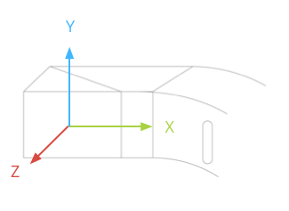

You access location and sensor data using the standard Android platform APIs.## Location
Location on Glass involves using the standard Android platform APIs to get location data from available location providers.
You’ll use the following Android SDK classes to get location data:
LocationManager – Provides access to the Android location system service that handles communication with a LocationProvider.LocationProvider – Provides location data based on some criteria. Glass provides special “remote” providers that let you obtain location data from a paired device that has the MyGlass companion app installed.Criteria – Lets you create a set of criteria that selects the best LocationProvider based on the criteria that you set.To obtain location data, you’ll need to use the LocationManager class to get data from one or more location providers.
Applications on an Android phone or tablet retrieve location data from local GPS and network location providers on the device. On Glass, however, the set of available location providers is dynamic and may include remote location providers that supply location data from another source, such as a Bluetooth-paired device with the MyGlass companion app installed. To handle these additional providers, listen for location updates from multiple providers rather than a single provider.
Warning: Do not use the
LocationManager.getBestProvider()method or the constantsGPS_PROVIDERorNETWORK_PROVIDERto listen for location updates. Glass uses a dynamic set of providers and listening only to a single provider may cause your application to miss location updates.
To request data from all available location providers:
Criteria object with your location requirements.getProviders() to retrieve the list of enabled providers that satisfy your criteria.LocationManager locationManager; // initialized elsewhere
// This example requests fine accuracy and requires altitude, but
// these criteria could be whatever you want.
Criteria criteria = new Criteria();
criteria.setAccuracy(Criteria.ACCURACY_FINE);
criteria.setAltitudeRequired(true);
List<String> providers = locationManager.getProviders(
criteria, true /* enabledOnly */);
for (String provider : providers) {
locationManager.requestLocationUpdates(provider, minTime,
minDistance, listener);
}
Glass has a specialized sensor to detect whether or not the device is on the users’ head. When enabled, this setting helps conserve battery when the device is not in use. You can use this feature in your Glassware to disable or throttle background services. Start by implementing a BroadcastReceiver to detect ACTION_ON_HEAD_STATE_CHANGE [TODO: ADD LINK] events.
Note: Your app can not detect on-head detection events if the user disables the feature in the settings.
The following example delays and disables game score updates based on whether the user has removed Glass from their head:
BroadcastReceiver to handle the state change.onCreate() method and register a receiver that listens for the ACTION_ON_HEAD_STATE_CHANGE [TODO: ADD LINK] intent.onDestroy() method, unregister the receiver.import com.google.android.glass.content.Intents;
...
public class LiveCardService extends Service {
...
private boolean mIsStopped = false;
private final BroadcastReceiver broadCastReceiver = new BroadcastReceiver() {
@Override
public void onReceive(Context context, Intent intent) {
if (Intents.ACTION_ON_HEAD_STATE_CHANGED.equals(intent.getAction())) {
boolean onHead = intent.getBooleanExtra(Intents.EXTRA_IS_ON_HEAD,
false);
if (onHead) {
mDelay = LiveCardService.DELAY_MILLIS;
if (isStopped()) {
// Resume updating scores
setStop(false);
// Restart immediately to get a refreshed score
mHandler.postDelayed(mUpdateLiveCardRunnable, 0);
}
} else {
// Increase the delay when the device is off head
mDelay = LiveCardService.DELAY_MILLIS_EXT;
}
}
}
};
private final Runnable mUpdateLiveCardRunnable = new Runnable() {
@Override
public void run() {
if (mDelay == DELAY_MILLIS_EXT) {
// Count the increased delay as a retry attempt
mRetryCount++;
} else if (mDelay == DELAY_MILLIS) {
mRetryCount = 0;
}
if (mRetryCount > MAX_RETRIES) {
// Stop updating scores
mIsStopped = true;
}
if (!isStopped()) {
// Generate fake points.
homeScore += mPointsGenerator.nextInt(3);
awayScore += mPointsGenerator.nextInt(3);
// Update the remote view with the new scores.
mLiveCardView = getRemoteViews(homeScore, awayScore);
// Always call setViews() to update the live card's RemoteViews.
mLiveCard.setViews(mLiveCardView);
// Queue another score update in 30 seconds.
mHandler.postDelayed(mUpdateLiveCardRunnable, mDelay);
}
}
};
@Override
public void onCreate() {
super.onCreate();
mPointsGenerator = new Random();
mDelay = DELAY_MILLIS;
registerReceiver(broadCastReceiver, new IntentFilter(
Intents.ACTION_ON_HEAD_STATE_CHANGED));
}
@Override
public int onStartCommand(Intent intent, int flags, int startId) {
if (mLiveCard == null) {
// Get an instance of a live card
mLiveCard = new LiveCard(this, LIVE_CARD_TAG);
// Inflate a layout into a remote view
mLiveCardView = new RemoteViews(getPackageName(),
R.layout.live_card);
// Set up initial RemoteViews values
homeScore = 0;
awayScore = 0;
mLiveCardView = getRemoteViews(homeScore, awayScore);
// Set up the live card's action with a pending intent
// to show a menu when tapped
Intent menuIntent = new Intent(this, LiveCardMenuActivity.class);
menuIntent.addFlags(Intent.FLAG_ACTIVITY_NEW_TASK |
Intent.FLAG_ACTIVITY_CLEAR_TASK);
mLiveCard.setAction(PendingIntent.getActivity(
this, 0, menuIntent, 0));
// Publish the live card
mLiveCard.publish(PublishMode.REVEAL);
// Queue the update text runnable
mHandler.post(mUpdateLiveCardRunnable);
}
return START_STICKY;
}
@Override
public void onDestroy() {
if (mLiveCard != null && mLiveCard.isPublished()) {
//Stop the handler from queuing more Runnable jobs
setStop(true);
mLiveCard.unpublish();
mLiveCard = null;
}
unregisterReceiver(broadCastReceiver);
super.onDestroy();
}
@Override
public IBinder onBind(Intent intent) {
return null;
}
private RemoteViews getRemoteViews(int homeScore, int awayScore) {
RemoteViews remoteViews = new RemoteViews(getPackageName(),
R.layout.live_card);
remoteViews.setTextViewText(R.id.home_team_name_text_view,
getString(R.string.home_team));
remoteViews.setTextViewText(R.id.away_team_name_text_view,
getString(R.string.away_team));
remoteViews.setTextViewText(R.id.footer_text,
getString(R.string.game_quarter));
remoteViews.setTextViewText(R.id.home_score_text_view,
String.valueOf(homeScore));
remoteViews.setTextViewText(R.id.away_score_text_view,
String.valueOf(awayScore));
return remoteViews;
}
public boolean isStopped() {
return mIsStopped;
}
public void setStop(boolean isStopped) {
mIsStopped = isStopped;
}
}
The following Android sensors are supported on Glass:
TYPE_ACCELEROMETERTYPE_GRAVITYTYPE_GYROSCOPETYPE_LIGHTTYPE_LINEAR_ACCELERATIONTYPE_MAGNETIC_FIELDTYPE_ORIENTATION (deprecated)TYPE_ROTATION_VECTORThe following Android sensors are not supported:
Note: The Glass platform is based on Android 4.4 (API Level 19), but does not support the sensor features of that platform level or Android 4.3 (API Level 18). API features for sensors is frozen at Android 4.2 (API Level 17) for the aforementioned sensors that are supported.
Here are some tips when using sensors on Glass:

Service to render a LiveCard [TODO: ADD LINK] and you only need the sensors when the live card is visible, use the LiveCard [TODO: ADD LINK] surface callback methods to start and stop listening to the sensors.For more information on how to use sensors, see the Android developer guide.
Portions of this page are reproduced from work created and shared by Google and used according to terms described in the Creative Commons 4.0 Attribution License.